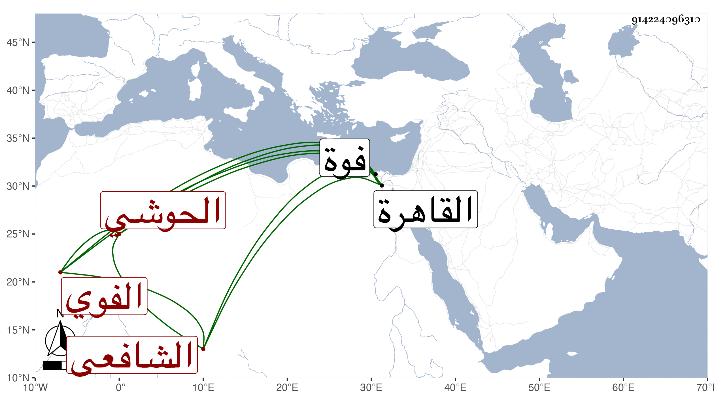

0902Sakhawi.DawLamic.ITO20230111-ara1.EIS1600.914224096310
Biography ID: 914224096310
762
علي بن سليمان بن أحمد نور الدين الحوشي الفوي الشافعي ويعرف بالحوشي . ولد في سنة تسع عشرة وثمانمائة بفوة ونشأ بها فحفظ القرآن عند الشهاب المتيحي بل وتلاه عليه لنافع وابن كثير وأبي عمرو ثم بعضه لنافع على البرهان الكركي وحفظ بعض الحاوي والرائية ونحو نصف الشاطبية وجميع الرحبية وتفقه بالمتيحي المذكور وبالبدر بن الخلال ، واشتغل بالعربية وغيرها وولى إمامة جامع ابن نصر الله ببلده مدة وخطب ببعض القرى ولقيته ببلده فسمع بقراءتي وأنشد ، مخاطبا :
| أنعشت بالقرب يا مولاي أفئدة | إذ كان مرويك العالي لها سندا |
| ومذ حللت كسينا من مآثر ما | آثرته حللا لم تنتزع أبدا |
| وأصبح الكون مفترا مباسمه | بسنة المصطفى الهادي لكل هدى |
| وعاد غيهبها نورا وعسرتنا | يسرا وفاقتنا أضحت غنى رغدا |
| أكرم بها سنة صحت بلا سقم | عزيزة الحسن لم تسأم فتبتعدا |
في أبيات أوردتها مع غيرها مما كتبته عنه في الرحلة وغيرها ورأيته بالقاهرة بعد ذلك . وكان إنسانا حسنا دينا متواضعا عفيفا ذا فضيلة واستحضار . مات بعد أن كف في سنة ست وثمانين على ما يحرر رحمه الله وإيانا .
